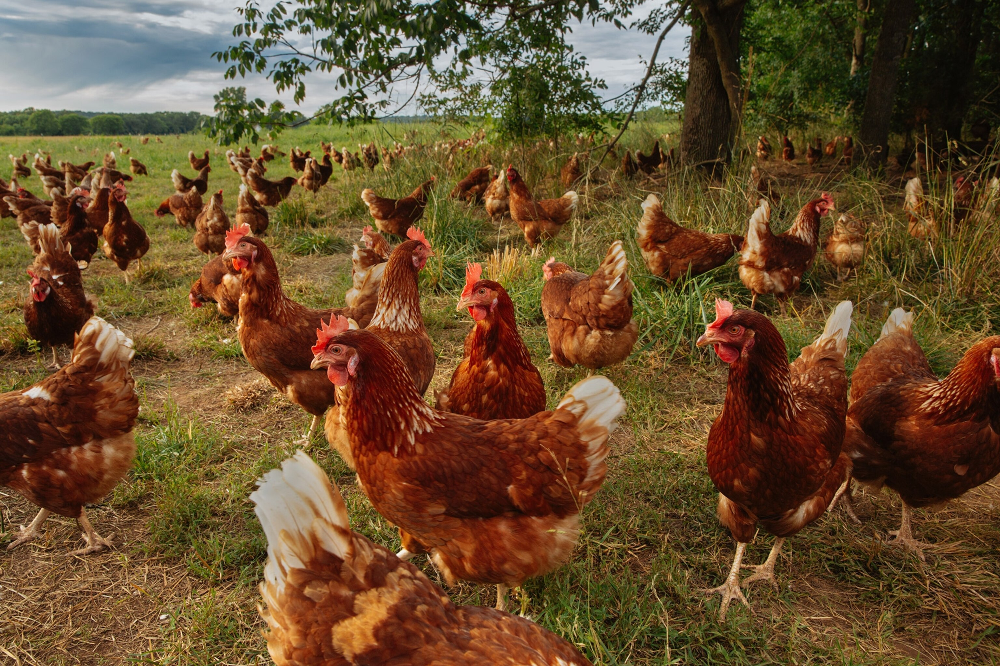

Poultry Farming
We raise strong, healthy poultry with the highest standards of hygiene and nutrition. From day-old chicks to fully grown broilers and layers, our poultry products are trusted by homes, markets, and institutions nationwide. For our
Hatchery (Hecatry) Services
Nurturing Healthy Chicks for a Stronger Poultry IndustryOur modern hatchery provides farmers across Sierra Leone with access to high-quality day-old chicks, ensuring a strong foundation for successful poultry production. We use advanced incubation technology, strict biosecurity, and expert veterinary oversight to guarantee the health and vitality of every chick.
Our Hatchery Services Include:
Day-Old Chicks:
Broilers and layers bred for fast growth and high egg production.Temperature-Controlled Incubation:
Ensuring maximum hatchability rates.Biosecurity & Quality Control:
Regular vet checks, vaccinations, and strict hygiene.Farmer Training:
Guidance on brooding, feeding, and managing chicks.Delivery Services:
Reliable transport to farms and rural communities.- Premium broilers & layers
- Organic, in-house poultry feed
- Full vaccination & veterinary care
- Bulk & retail supply
Quality Birds. Healthy Protein. Local Impact.
At Yormatah AgriTech Farm, our poultry division is built on excellence, sustainability, and community nutrition. We raise healthy broilers and layers under strict biosecurity and hygiene standards — delivering fresh chicken meat and eggs that meet the highest quality benchmarks in Sierra Leone. Whether you're a household, wholesaler, restaurant, or institution, we provide consistent, affordable, and locally produced poultry to meet your needs.
What we offer
Broiler Chickens
Fast-growing, tender meat birds ideal for commercial and home consumptionLayer Hens
High-yield egg producers for long-term egg supply.Fresh Eggs
Daily harvests, packed with nutrients, delivered fresh to market.Organic Poultry Feed
Our birds are fed with in-house, nutrient-rich feed for optimal health.Veterinary Support
Regular vaccinations and monitoring by trained professionals.Our Supply Options
Why Our Poultry Matters
Trust Yormatah AgriTech Farm for safe, healthy, and reliable poultry supply.
We’re not just raising chickens — we’re raising standards
Ready to place an order or start a poultry partnership?
Vegetable Production Department
Fresh. Organic. Grown for Sierra Leone. At Yormatah AgriTech Farm, we grow more than just vegetables — we grow nutrition, livelihoods, and resilience. Our vegetable production department uses organic methods, precision agriculture, and eco-friendly technologies to deliver fresh, chemical-free produce year-round. We supply homes, markets, restaurants, hotels, Homes, and NGOs with healthy, affordable vegetables locally grown and packed with nutrients.
Our Fresh Produce Includes:
Our Farming Methods:
Empowering Communities Through Vegetables
We don’t just grow crops — we build capacity. Our programs train youth and women farmers in eco-friendly cultivation and business practices, giving them tools to succeed and scale.
Who We Serve:
Local markets & street vendors
Restaurants, hotels & supermarkets
Homes, hospitals & relief organizations
Bulk buyers, cooperatives & processors
Our Distribution & Logistics
Choose Yormatah AgriTech Farm for clean, consistent, and climate-smart vegetable supply.
We’re committed to feeding Sierra Leone — one garden at a time.
For Orders or Wholesale Inquiries: Call Us NowAnimal Feed Production

Feeding Livestock. Empowering Farmers.
we produce high-quality, affordable animal feed to support livestock farmers across Sierra Leone. Our feed blends are formulated using locally sourced ingredients and scientifically balanced to enhance animal health, improve growth rates, and increase productivity — naturally.
Our mission is to reduce dependency on imported feeds by delivering reliable, cost-effective nutrition for poultry, cattle, goats, and sheep.
What We Offer:
Poultry Feed:
Starter, grower, finisher, and layer mashCattle Feed:
For dairy and beef productionGoat & Sheep Feed:
Energy-rich, locally optimized blendsMineral Mixes & Supplements:
Boost immunity and productivityOur Feed Advantages:
-
Locally Sourced Ingredients:
Maize, rice bran, groundnut cake, and more
-
Research-Based Formulations:
Developed with veterinary input
-
No Harmful Additives:
Free from banned antibiotics or artificial boosters
-
Cost-Effective:
Designed to reduce feeding costs while improving output
-
LAvailable in Bulk & Retail Packs:
Scaled to meet all farm sizes
Supporting Local Farmers:
Our feed production system is fully integrated with our farmer empowerment program. We provide:
Farmer training on best feeding practices
Access to affordable feed financing
Field support and animal nutrition advice
FAQ
Can I buy feed in small or large quantities?
Yes! We offer both retail-sized packaging for smallholders and bulk orders for commercial farms, cooperatives, and institutions.
Do you deliver animal feed to farms?
Yes. We provide on-farm delivery for bulk orders and work with distribution partners to reach farmers in rural areas.
Do you offer custom feed formulations?
Absolutely. If you have specific needs for a particular animal type or growth stage, we can provide customized feed mixes upon request.
Can I get technical advice on feeding practices?
Yes. We provide free farmer support on proper feeding schedules, feed quantity, and animal health management — both in person and over the phone
Fuel your livestock with feed you can trust.
Yormatah AgriTech Farm – Feeding Sierra Leone’s future, one bag at a time.
Call Us NowRice Farming
Growing Sierra Leone’s Staple. Reducing Import Dependence. At Yormatah AgriTech Farm, rice is more than just a crop — it’s a national priority. Sierra Leone relies heavily on imported rice, but we are changing that by cultivating high-yield, climate-resilient rice varieties on reclaimed farmland and former mining sites. Through mechanized farming, improved seeds, and farmer training, we aim to produce enough quality rice to feed local communities and supply markets year-round.
What We Offer:
Seed Multiplication:
Producing and distributing certified, locally adapted rice seeds.Mechanized Farming:
Using tractors, planters, and harvesters for efficient production.Irrigation Systems:
Ensuring year-round cultivation even in dry seasons.Milling & Packaging:
From field to market with quality control at every stage.
Why Our Rice Matters:
High-Yield Varieties:
Developed for local conditions to maximize harvests.Food Security:
Reducing reliance on imports and stabilizing prices.Soil Restoration:
Reclaiming degraded land and improving soil health.Climate Resilience:
Adapted to withstand droughts and floods.Organic Practices:
Minimal chemical use, promoting soil health.Local Empowerment:
Training smallholder farmers in modern techniques.FAQ
Do you use organic or chemical farming methods?
We prioritize organic and eco-friendly farming practices, using minimal, safe inputs only when necessary. Our goal is to produce healthy, chemical-free rice for local consumption.
Do you work with smallholder farmers?
Yes. We partner with smallholder farmers through training, seed distribution, and buy-back programs, helping them increase yields and income.
How do you ensure quality in your rice?
We follow strict quality control from planting to packaging including seed selection, field inspection, mechanized harvesting, and clean milling to deliver premium rice.
What type of rice do you produce?
We grow high-yield, climate-resilient rice varieties that are well-suited to Sierra Leone’s environment, ensuring consistent harvests and premium quality grains.
Can you supply large-scale orders?
No for now, We are working with the government agencies, NGOs, and private companies to fulfill the feed salone project.
Do you export rice?
Currently, our focus is on feeding Sierra Leone and reducing import dependency, but we are open to exploring export opportunities as production scales up.